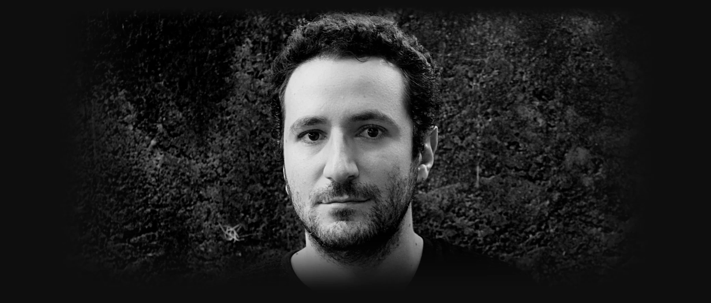

Rafael Melhem
DJ e produtor musical
Set 100% em vinil
Sobre
Rafael Melhem é DJ e produtor paulista, com lançamentos desde 2011. Seus sets em vinil aproximam o deep house do jazz e do soul. No estúdio, essa escuta aparece nos acordes de teclado e nos timbres, com referências ao house dos anos 1990.
Em 2024, foi DJ residente aos sábados no Leila Restaurante, de Tania Bulhões, em São Paulo. Ali, suas seleções iam do jazz japonês dos anos 1970 ao deep house dos anos 1990. Também já tocou no Seen, no Tivoli Mofarrej, no Matiz Bar e no Heavy House.
Também trabalhou com identidade musical para o varejo. Para a TNG, produziu um repertório original para todas as lojas da rede. O projeto obteve isenção formal de pagamento dos direitos de execução pública (dispensa de cobrança pelo Ecad). No Grupo Valdac, foi responsável pela curadoria e pela produção musical de todas as lojas da Siberian, da Crawford e da Memove.
Sob o pseudônimo The Soul Architect, dividiu com Alex Agore o EP Subliminal, que abriu o catálogo da ALRA Records em 2015. Sua discografia inclui também Voyager, pela Abstract Theory, e Aerowalk, lançado sob seu próprio nome pela ALRA. Suas produções têm o suporte de vários artistas importantes da cena, como Danilo Plessow (Motor City Drum Ensemble), Ney Faustini, Leonardo Ruas, entre outros.